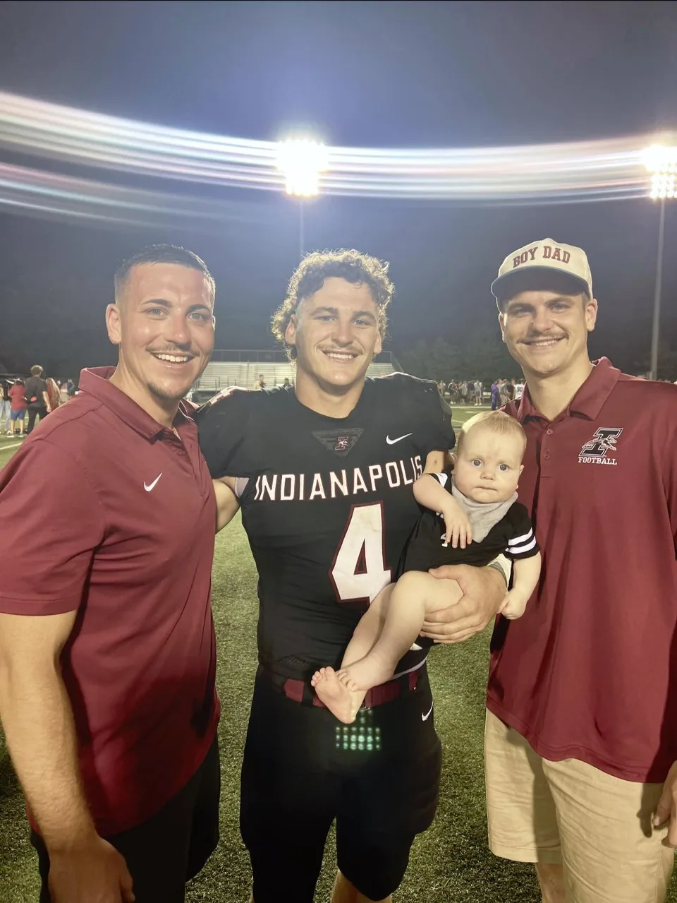

Indiana
Family and football
I grew up in Indiana with my brothers, Koby and KJ. Sports and family have always been a big part of my life.
I root for the Minnesota Vikings and Notre Dame football. And the UIndy photo is from one of KJ’s games, with Koby and Leland there too.
